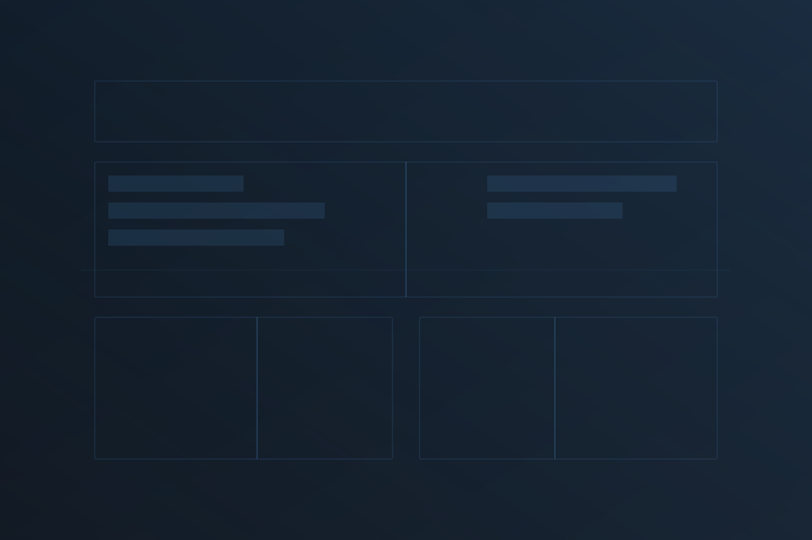

Credenciales y mandato tecnológico institucional
Soy Subdirector de Desarrollo Tecnológico, Ingeniero en Sistemas Computacionales y Maestro en Seguridad Informática. Mi trayectoria profesional se ha construido desde el desarrollo de software hasta la dirección tecnológica, con más de 9 años de experiencia en programación, arquitectura de soluciones, infraestructura y operación institucional en el sector público. Hoy dirijo estrategias orientadas a fortalecer infraestructura crítica, ciberseguridad, continuidad operativa e interoperabilidad, coordinando equipos multidisciplinarios con enfoque en cumplimiento normativo y mejora continua. Integro gestión, desarrollo de sistemas, datos y gobierno digital para consolidar soluciones de administración de personal y plataformas administrativas, académicas y operativas. Además, participo en docencia y capacitación en seguridad informática, informática aplicada, normatividad y desarrollo de sistemas.
Christopher Delgadillo Ramírez
Estado de México, México
Desarrollo, acompañamiento técnico y dirección tecnológica con enfoque institucional
Diseño, construcción y evolución de sistemas orientados a modernizar procesos, integrar operación y habilitar soluciones institucionales, administrativas, académicas y de control.
Acompañamiento técnico para despliegue, operación, continuidad y fortalecimiento de infraestructura, aplicativos y entornos de trabajo con criterio funcional y operativo.
Diagnóstico, definición de lineamientos, priorización, mejora operativa y acompañamiento estratégico para iniciativas de transformación digital, normatividad, continuidad y gobierno tecnológico.
Capacidades técnicas y de gestión
Coordinación de iniciativas tecnológicas con enfoque en operación institucional, alineación estratégica, mejora continua y toma de decisiones orientada a resultados.
Diseño de soluciones tecnológicas, definición de componentes, integración de plataformas y estructuración de aplicaciones con criterio de escalabilidad y sostenibilidad.
Administración de entornos Windows y Linux, despliegue de plataformas, continuidad operativa y soporte a infraestructura crítica.
Fortalecimiento de controles, reducción de riesgos, protección de información y apoyo a la operación segura de servicios institucionales.
Gestión de datos, diseño de estructuras de información e integración entre sistemas para soportar procesos institucionales y operación confiable.
Impulso de soluciones alineadas a cumplimiento, criterios institucionales, gobierno digital y operación tecnológica con responsabilidad organizacional.
Aval en entornos institucionales
Cargos, formación y competencias operativas
Coordinación de equipos técnicos multidisciplinarios y responsabilidad operativa de la Subdirección en la cadena tecnológica institucional: priorización de iniciativas, continuidad del servicio e integración entre sistemas.
Administración y evolución de servidores y bases de datos, despliegue de sistemas institucionales, arquitectura de software y respaldo a equipos de desarrollo y operación en plataformas de impacto institucional, con participación sustancial en el Sistema de Puestos y Plazas.
Desarrollo de sistemas institucionales, soporte transversal en infraestructura y telecomunicaciones, y conducción de procesos de migración tecnológica.
Desarrollo de plataformas académicas, administrativas y de apoyo operativo en un organismo de salud pública estatal.
Título de maestría y cédula profesional en vigor.
Licenciatura con titulación concluida.
Núcleo técnico y de gestión
Conducción de mandato, arquitectura de solución e implementación transversal
Referencias de mandato, alcance y resultados institucionales.
Conducción de la transformación tecnológica institucional mediante lineamientos de respuesta y contención, adopción de prácticas ágiles de desarrollo, integración de equipos especializados, fortalecimiento de infraestructura y mejora de capacidades operativas para proyectos de alto impacto.
Dirección, continuidad, seguridad y escalamiento institucional.
Liderazgo en el planteamiento y arquitectura de una solución para control de personal, histórico de movimientos, reglas de negocio, techos presupuestales y proyecciones, con enfoque en trazabilidad y soporte institucional para la toma de decisiones.
Control, trazabilidad y soporte a decisiones.

Diseño y evolución de un sistema de reconocimiento facial orientado al control y seguimiento de estudiantes de residencias, prácticas profesionales y servicio social, como soporte a la administración integral del programa.
Control biométrico aplicado a procesos académicos y operativos.
Concepción de un portal integral para trasladar a entorno en línea la atención brindada por la Dirección General de Personal, centralizando trámites, mejorando acceso y fortaleciendo seguimiento y servicio.
Digitalización de atención y ventanilla institucional.
Dirección técnica, arquitectura, desarrollo, infraestructura y seguridad con experiencia en tecnologías y prácticas actuales
Tech Lead con enfoque en dirección técnica, arquitectura, operación, seguridad e integración institucional
Conducción de equipos, definición de prioridades, alineación entre operación, desarrollo, infraestructura y objetivos institucionales.
Diseño de soluciones, estructuración de sistemas, integración de componentes y construcción de plataformas orientadas a control, automatización y operación institucional.
Administración de infraestructura crítica, fortalecimiento de seguridad, continuidad operativa e interoperabilidad para sostener servicios y plataformas de alto impacto.
Auditoría técnica, elaboración de procedimientos, revisión de vulnerabilidades, análisis forense, fortalecimiento de controles y medidas de continuidad para reducir riesgo operativo y elevar la madurez de seguridad en entornos institucionales.
Canales para coordinación formal
Correo para contacto profesional, académico o institucional.
Nombre, ubicación y teléfono.